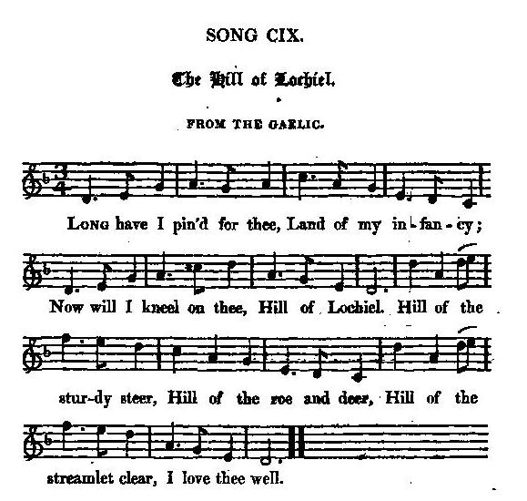
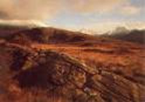

Braighe Lochiall
The Braes of Lochiel - Les collines de Lochiel
The exile's return - Le retour d'exil
Tune -Melodie"The Hills of Lochiel" (sound bkg to this page)
from Hogg's "Jacobite Relics" 2nd Series N°109, page 209, 1821
Alternative Tune - Mélodie
"Braighe Lochiall"
from Simon Fraser's "Airs and Melodies of the Highlands" N°44 pg.16
Sequenced by Christian Souchon

|
To the tune: "N° 44 reports the intention of an individual, seemingly long absent, to return to the braes of Lochiel, where he could enjoy the pleasure of the chase in perfection. The circumstances of the times banished so many from their native country that it is difficult to trace the allusion." Captain Simon Fraser The song included by James Hogg in the 2nd volume of his "Jacobite Relics is evidently the song referred to by Simon Fraser. But Fraser's "Braighe Lochiall" (N°44 page 16) and Hogg's "Hills of Lochiel" (N°109 page 209) are two different tunes. Hogg in a note to the present song keenly acknowledges Captain Fraser's work, as follows: "Is another song of the Camerons, a genuine strain of joy, supposed to be sung by an exile on returning to the scene of his youthful pastimes. It was sent to me by Captain John Steuart. The air is to be found in Frazer's work, under the same title. Here I must once again bear testimony to the inestimable value of that gentleman's collection to all true lovers of the genuine airs and melodies of his country ; I will not say it is worth all the collections that ever were made ; but, certainly, no single collection of Scottish music ever was made like it, for the number, the beauty, and the originality of the tunes." The Gaelic lyrics are still known. Ishbel McAskill and Blair Douglas published them with a CD titled "Sioda" (Silk) in 1994. Unlike Hogg's alleged "translation" they are free of any explicit Jacobite touch. |
A propos de la mélodie: "Le chant n° 44 parle d'un exilé de longue date qui désire ardemment retourner vers les collines de Lochiel, où il pourrait s'adonner pleinement à sa passion, la chasse. Tant de gens furent bannis de leur pays natal à l'époque qu'on est bien en peine de savoir à qui il est fait allusion." Capitaine Simon Fraser Le chant reproduit par James Hogg dans le volume II de ses "Reliques Jacobites" est, à l'évidence, celui dont parle Simon Fraser. Cependant "Braighe Lochiall" chez Fraser (N°44 page 16) et "Hills of Lochiel" chez Hogg (N°109 page 209) sont deux mélodies différentes. Hogg dans la note sur le présent chant rend hommage à l''uvre de Fraser: "Voici un chant du clan Cameron, une mélodie joyeuse chantée par un exilé à son retour sur les lieux de son enfance. Il m'a été procuré par le Capitaine John Steuart. La mélodie se trouve chez Fraser sous un titre identique. Je voudrais ici rendre hommage, une nouvelle fois, à ce recueil d'une valeur inestimable pour tous ceux qui aiment les authentiques airs et mélodies de ce pays. Je ne dirais pas qu'il vaut à lui seul toutes les autres compilations, mais que, certainement, aucun de ces recueils ne peut lui être comparé, pour le nombre, la beauté et l'originalité des morceaux qu'il contient." Le texte gaélique est encore connu. Ishbel McAskill et Blair Douglas en ont publié les paroles dans un album intitulé "Sioda" en 1994. Contrairement à la "traduction" (!) de Hogg, il est exempt de tout Jacobitisme explicite. |
1st Version: James Hogg

|
THE HILLS OF LOCHIEL from the Gaelic (*) 1. Long have I pin'd for thee, Land of my infancy; Now will I kneel on thee, Hill of Lochiel. Hill of the sturdy steer, Hill of the roe and deer, Hill of the streamlet clear, I love thee well. 2. When in my youthful prime, Correi and crag to climb Or towering cliff sublime, Was my delight; Scaling the eagle's nest, Wounding the raven's breast, Skimming the mountain's crest, Gladsome and light. 3. When, at the break of morn, Proud o'er thy temples borne, Kythed the red-deer's horn, How my heart beat! Then, when with stunned leap Roll'd he adown the steep, Never did hero reap Conquest so great. 4. Then rose a bolder game. Young Charlie Stuart came ; Cameron, that loyal name, Foremost must be. Hard then our warrior meed, Glorious our warrior deed, Till we were doom'd to bleed By treachery. 5. Then did the red blood stream ; Then was the broad sword's gleam Quench'd, in fair freedom's beam No more to shine; Then was the morning's brow Red with the fiery glow; Fell hall and hamlet low, All that were mine. 6. Then was our maiden young, First aye in battle strong, Fir'd at her prince's wrong, Forc'd to give way; Broke was the golden cup, Gone Caledonia's hope; Faithful and true men drop Fast in the clay. 7. Far in a hostile land Stretch'd on a forein strand Oft has the tear-drop bland Scorch'd as it fell. Once was I spurn'd from thee, Long have I mourn'd for thee, Now I'm return'd to thee, Hill of Lochiel! (*) To know the import of that phrase, click here Source: "The Jacobite Relics of Scotland, being the Songs, Airs and Legends of the Adherents to the House of Stuart" collected by James Hogg, volume 2 published in Edinburgh by William Blackwood in 1821. |
LES COLLINES DE LOCHIEL Traduit du gaélique (*) 1. Après ma longue absence Pays de mon enfance, Je m'agenouille enfin Sur ton cher sol. Pays des beaux prés verts, Pays des daims, des cerfs, Pays des torrents clairs, Monts de Lochiel! 2. Enfant, j'escaladais Les ravins, les rochers. Monter jusqu'aux sommets Ah, quel beau jeu! Dénicher les aiglons, Tuer les corbeaux, sinon, Sur la crête des monts, Libre et heureux. 3. Quand à l'aube parfois Des ramures de bois Se montraient, quel émoi! C'était un cerf! Le cerf, d'un bond soudain, Dévalait le ravin: Nul homme, je crois bien, N'était si fier! 4. Quand vint Charlie, les jeux Furent plus dangereux. Et Cameron le preux Ouvrait la marche! Que d'épreuves subies, De gloires inouïes, Avant d'être flétries Par quelques lâches! 5. Des flots de sang vermeil Noient l'éclat sans pareil Dont brillaient au soleil, Libres, nos glaives. Sur des lieux désolés, Des débris calcinés: Mon village incendié, Le jour se lève. 6. En vain nos jeunes gens, Combattant à l'avant, Au Prince offraient leur sang: On les vit choir. Ce vase d'or brisé, Ces héros terrassés, Calédonie, c'était Tous ton espoir. 7. Dans un pays lointain Sur la rive je geins La larme qui me vient Sèche au soleil. Je fus chassé jadis, Longtemps me suis langui. Oui, mais me revoici, Monts de Lochiel! (*) Pour connaître le sens à donner à ces mots, cliquer ici (Trad. Christian Souchon (c) 2010) |
2nd Version: Gaelic Lyrics
|
THE HILLS OF LOCHIEL 1. Oh I'll go, I shall go Oh I shall go over To the cattle grazings To the [melodious!?] girl I once knew Chorus: Ill obha ho, Ho ìriri ù o, E hoiriunn òg ù, O irriri ù o, Ill obha ho. 2. To the Braes of Locheil Where the bellowing stags [deer] are. And the little roe of the peaks So strong [lightfooted] and so nimble 3. O woman of the fine hair I gave you my promise [I will give you my blessing] My blessing [promise] goes with you Though [As] we had to part 4. A white head-dress becomes you well Arranged on you in a point Framing the smooth-skinned face Of the blue, beguiling eyes 5. And stays of fine silk Drawn tight around you And a new apron From the merchant's shop 6. Often were we In a shieling in the glen In a snug little bothy With only brush-wood for a door 7. Adroit at rearing calves Gentleness was second nature to you When it was time to go to bed Our fire never dwindled 8. My hand beneath your head And your white arm around me My side against your side Both of us tender-hearted and loving (Transl. I. AcAskill & B. Douglas) |
BRAIGHE LOCHIALL 1. O théid, c' uim' nach téid, Naile théid mi thairis Gu innis nam bò Far an b'eòl dhomh [ceòl mhor] ainnir. Sèist: Ill obha ho, Ho ìriri ù o, E hoiriunn òg ù, O irriri ù o, Ill obha ho. 2. Gu bràighe Lochiall Far 'm bi ['N dean am] fiadh 'san langan Is earbag nan stùc, Gu lùth[mh]ar eangarr'. 3. A bhean an fhuilt rèidh, Thug mi fhèin dhuit mo ghealladh [Guidheam fèin mo bheannachd dhuit] Mo bheannachd [ghealladh] a'd dhèigh, Ged b' [O 'n 's] fhèudar dealait': 4. Gur math 'thig brèid bàn, Air a chàradh ort beannach: Mu aghaidh gun sgraing Nan gorm-shuilean meallach : 5.Is staidhse dhan t-sìoda And stays of fine silk Mhìn gad theannachadh Drawn tight around you Is aparan ùr And a new apron À bùth a' cheannaich' From the merchant's shop 6. Gur minic a bhà sinn [mi] An àiridh ghleannaich [leat] : Am bothan beag dlùth Gun dùnadh ach barraich 7. Lamh thogail an àil, Bha tlàths riut ceangailt' : N àm gabhail mu thàmh Cha do chnàmh ar teallach [dhuinn] 8. Mo làmh fo d' cheann, 'S do lamh gheal tharam': Mo thaobh ri d' thaobh 'S sinn maoth-chri'ch tairis. |
LES COLLINES DE LOCHIEL 1. Oui, je reviendrai, Vers ces lieux agrestes, Où les troupeaux paissent, Vers toi que j'aimais, Refrain: Ill obha ho, Ho ìriri ù o, E hoiriunn òg ù, O irriri ù o, Ill obha ho. 2. Ces monts de Lochiel Où les grands cerfs brament, Et les daims détalent A l'assaut du ciel. 3. Femme aux doux cheveux, Je t'ai fait promesse [Tu as ma bénédiction] J'y pense sans cesse, Et même en ces lieux, 4. D'un beau fichu blanc Dont les bouts dépassent Encadrant ta face Et tes yeux charmants; 5. De soyeux rubans Enserrant ta taille. Il faudra que j'aille Chez quelque marchand. 6. Nous dormions souvent En haut des alpages Avec des branchages En guise d'auvent. 7. Soigner l'agnelet T'apprit la tendresse: Et le soir sans cesse La flamme brûlait: 8. Ton bras m'entourant, Ma main sous ta tête, Nous ne cessions d'être De tendres amants. (Trad. Christian Souchon (c) 2015) |
